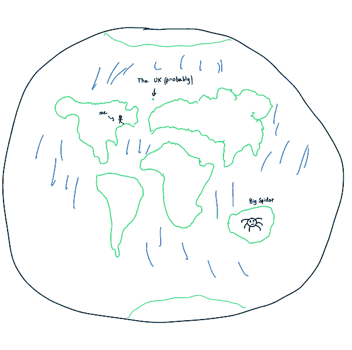

method
Two things on this page are our forecasts: the weather on the map and globe, and a correction to where satellites will be. The rest is published data.
1. weather
The Earth is cut into 1,152 cells on a 7.5° grid. Each morning a U-Net reads the past 30 days of 7 fields in every cell (cloud, temperature, rain, pressure, wind east and north, water vapour) and predicts today's mean cloud, temperature and pressure. One network forecasts cloud; temperature and pressure are each the mean of 3. All were trained on ERA5, 1979 to 2018, and tested on 2021 and 2022. Until they run, the map shows Open-Meteo's forecast and says so.
A day is scored once it has passed, against Open-Meteo's analysis, with each cell weighted by its area:
loss = Σ w · (f − a)² / Σ w, w = cos(latitude)
The bars show its square root, the typical miss. The bar to beat is repeating the day before.
loading scores
2. satellite positions
CelesTrak publishes each object's mean elements at one moment. The page moves about 17,000 objects from that moment to now with the secular J2 part of SGP4: the Earth's flattening turns each orbit's node Ω and perigee ω at a steady rate.
dΩ/dt = −1.5 J2 n cos i / p² dω/dt = 0.75 J2 n (5 cos²i − 1) / p² dM/dt = n (1 + 0.75 J2 √(1−e²) (3 cos²i − 1) / p²)
Kepler's equation M = E − e sin E is solved by Newton's method. A low-orbit dot a day ahead lands within 20 km of full SGP4 95% of the time.
3. satellite correction
SGP4 drifts from where an object will be, mostly along its track. A residual network reads each object's elements and how far its older element sets drifted, and corrects SGP4 for 1 to 30 days ahead. It is the mean of 3 networks trained on 28.6 million examples from 2017 to 2025. The truth is SGP4 from the next published element set, not a radar measurement.
loading scores
2025 replay on an eighth of the catalogue: the median miss 7 days ahead fell from 11.34 to 6.76 km. The corrections are under one pixel of the globe a day ahead, so the dots leave them out.
4. data
Weather by Open-Meteo (CC BY 4.0). Elements by CelesTrak. ERA5 through WeatherBench 2. Code and weights: ascii-earth-forecast.
